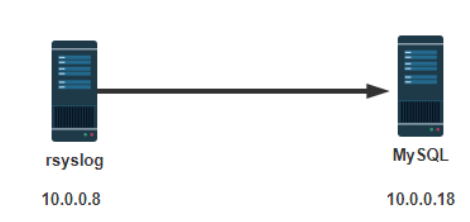
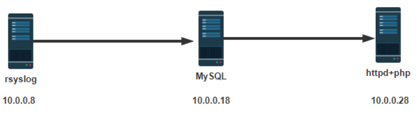
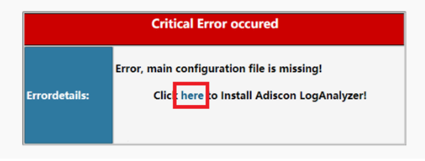
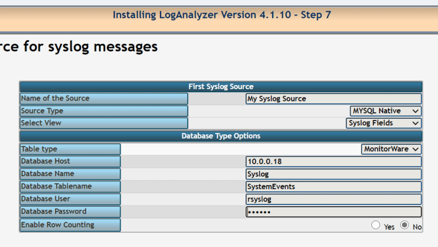
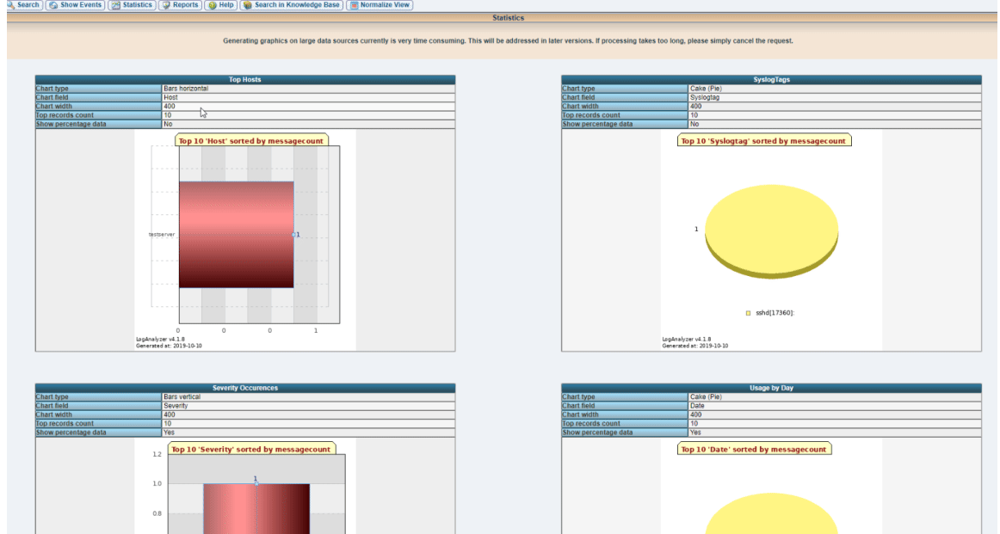
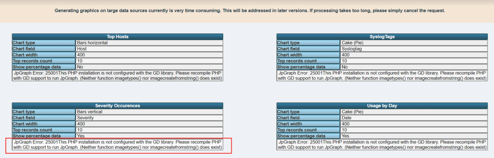

日志服务管理
- TAGS: Linux
日志服务管理
本章内容
- 本章内容
- 日志介绍
- 日志管理
- 日志管理工具 journalctl
- 基于MYSQL的日志
- loganalyzer展示日志
- logrotate日志存储
系统日志管理
系统日志介绍
将系统和应用发生的事件记录至日志中，以助于排错和分析使用：
日志记录的内容包括：
- 历史事件：时间，地点，人物，事件
- 日志级别：事件的关键性程度，Loglevel
事件：系统引导启动、应用程序启动、应用程序尤其是服务类应用程序运行 过程中的一些事件；
sysklogd 系统日志服务
CentOS 5 之前版本采用的日志管理系统服务
- syslogd: system application 记录应用日志
- klogd: linux kernel 记录内核日志
事件记录格式：
事件产生的日期时间 主机 进程[pid]: 事件内容
C/S架构：通过TCP或UDP协议的服务完成日志记录传送，将分布在不同主机的日志实现集中管理
rsyslog 系统日志服务
CentOS 6 以后版本的系统管理服务
rsyslog 特性
- 多线程
- UDP, TCP, SSL, TLS, RELP
- MySQL, PGSQL, Oracle实现日志存储
- 强大的过滤器，可实现过滤记录日志信息中任意部分
- 自定义输出格式
ELK
ELK：由Elasticsearch, Logstash, Kibana三个软件组成
- 非关系型分布式数据库
- 基于apache软件基金会jakarta项目组的项目lucene
- Elasticsearch是个开源分布式搜索引擎，可以处理大规模日志数据，比如：Nginx、Tomcat、系
- 统日志等功能
- Logstash对日志进行收集、分析，过滤，并将其存储供以后使用
- Kibana 可以提供的日志分析友好的 Web 界面
rsyslog 管理
系统日志术语
facility：设施，从功能或程序上对日志进行归类
auth, authpriv, cron, daemon,ftp,kern, lpr, mail, news, security(auth),user, uucp, syslog #自定议的分类 local0-local7
auth 各应用程序认证功能相关 authpriv 各应用与授权相关 cron 与crontable相关 daemon 和守护进程相关 kern 和内核相关 lpr 和打印系统相关 mail 和邮件系统相关 mark 和防火墙标记相关 news 和新闻组相关 security 和安全相关 user 和用户相关 uucp unix to unix copy,unix系统间复制协议相关 local0-local7 8个可自定义使用分类模式 syslog 其他，不便于归类的全都记录在此处
Priority 优先级别，从低到高排序
debug, info, notice, warn(warning), err(error), crit(critical), alert,emerg(panic)
参看帮助： man 3 syslog，man logger
[root@centos8 ~]#yum -y install man-pages [root@centos8 ~]#man 3 syslog
rsyslog 相关文件
- 程序包：rsyslog
- 主程序：/usr/sbin/rsyslogd
- CentOS 6：/etc/rc.d/init.d/rsyslog {start|stop|restart|status}
- CentOS 7,8：/usr/lib/systemd/system/rsyslog.service
- 配置文件： /etc/rsyslog.conf，/etc/rsyslog.d/*.conf
- 库文件： /lib64/rsyslog/*.so
rsyslog配置文件
/etc/rsyslog.conf 配置文件格式：由三部分组成
- MODULES：相关模块配置
- GLOBAL DIRECTIVES：全局配置
- RULES：日志记录相关的规则配置
RULES配置格式：
facility.priority; facility.priority… target
facility格式：
* #所有的facility facility1,facility2,facility3,... #指定的facility列表
priority格式：
*: 所有级别 none：没有级别，即不记录 PRIORITY：指定级别（含）以上的所有级别 =PRIORITY：仅记录指定级别的日志信息
target格式：
文件路径：通常在/var/log/，文件路径前的 - 表示异步写入 用户：将日志事件通知给指定的用户，* 表示登录的所有用户 日志服务器：@host，把日志送往至指定的远程UDP日志服务器 @@host 将日志发送到远程TCP日志服务器 管道： | COMMAND，转发给其它命令处理
通常的日志文件的格式：
日志文件有很多，如：/var/log/messages,cron,secure等，基本格式都是类似 的。格式如下
事件产生的日期时间 主机 进程(pid)：事件内容
范例：日志文件格式
[root@centos8 ~]#tail /var/log/messages Nov 12 08:34:18 centos8 dnf[14114]: Metadata cache created. Nov 12 08:34:18 centos8 systemd[1]: Started dnf makecache. Nov 12 09:35:14 centos8 systemd[1]: Starting dnf makecache... Nov 12 09:35:14 centos8 dnf[14249]: Metadata cache refreshed recently. Nov 12 09:35:14 centos8 systemd[1]: Started dnf makecache. Nov 12 10:21:22 centos8 systemd[1]: Starting man-db-cache-update.service... Nov 12 10:21:22 centos8 systemd[1]: Reloading. Nov 12 10:21:22 centos8 systemd[1]: Started man-db-cache-update.service. [root@centos8 ~]#tail /var/log/secure Nov 11 18:27:12 centos8 groupadd[11940]: group added to /etc/group: name=dhcpd, GID=177 Nov 11 18:27:12 centos8 groupadd[11940]: group added to /etc/gshadow: name=dhcpd Nov 11 18:27:12 centos8 groupadd[11940]: new group: name=dhcpd, GID=177 Nov 11 18:27:12 centos8 useradd[11948]: new user: name=dhcpd, UID=177, GID=177, home=/, shell=/sbin/nologin
范例：将ssh服务的日志记录至自定义的local的日志设备
#修改sshd服务的配置 Vim /etc/ssh/sshd_config SyslogFacility local2 Service sshd reload #修改rsyslog的配置 Vim /etc/rsyslog.conf Local2.* /var/log/sshd.log Systemctl restart rsyslog #测试 Ssh登录后，查看/var/log/sshd.log有记录 #logger测试 logger -p local2.info "hello sshd" tail /var/log/sshd.log有记录
启用网络日志服务
启用网络日志服务功能，可以将多个远程主机的日志，发送到集中的日志服务器，方便统一管理。
范例：CentOS 8 启用网络日志功能
[root@centos8 ~]#vim /etc/rsyslog.conf #### MODULES #### ...省略... # Provides UDP syslog reception # for parameters see http://www.rsyslog.com/doc/imudp.html module(load="imudp") # needs to be done just once input(type="imudp" port="514") # Provides TCP syslog reception # for parameters see http://www.rsyslog.com/doc/imtcp.html module(load="imtcp") # needs to be done just once input(type="imtcp" port="514") #在客户端指定将日志发送到远程的TCP、UDP的日志服务器 [root@centos7 ~]#vim /etc/rsyslog.conf *.info;mail.none;authpriv.none;cron.none /var/log/messages *.info;mail.none;authpriv.none;cron.none @@10.0.0.18 *.info;mail.none;authpriv.none;cron.none @10.0.0.18
范例：CentOS 7 和6 启用网络日志功能
####MODULES#### # Provides UDP syslog reception $ModLoad imudp $UDPServerRun 514 # Provides TCP syslog reception $ModLoad imtcp $InputTCPServerRun 514
常见日志文件
- /var/log/secure：系统安全日志，文本格式，应周期性分析
- /var/log/btmp：当前系统上，用户的失败尝试登录相关的日志信息，二进制格式，lastb命令进行查看
- /var/log/wtmp：当前系统上，用户正常登录系统的相关日志信息，二进制格式，last命令可以查看
- /var/log/lastlog:每一个用户最近一次的登录信息，二进制格式，lastlog命令可以查看
- /var/log/dmesg：CentOS7之前版本系统引导过程中的日志信息，文本格式，
开机后的硬件变化将不再记录
- 专用命令dmesg查看，可持续记录硬件变化的情况
- /var/log/boot.log 系统服务启动的相关信息，文本格式
- /var/log/messages ：系统中大部分的信息
- /var/log/anaconda : anaconda的日志
范例：找到失败登录的IP
[root@centos8 ~]#awk '/Failed password/{print $(NF-3)}' /var/log/secure 192.168.39.7 192.168.39.18 192.168.39.18
范例：找出失败登录次数最多的前10个IP
[root@centos8 ~]#lastb -f btmp-test1 | awk '{print $3}'|sort | uniq -c|sort - nr|head 8374 112.64.33.38 7041 221.125.235.4 6502 183.247.184.220 5970 203.190.163.125 5297 202.89.0.27 3062 119.163.122.32 2961 124.126.248.6 2921 92.222.1.40 2896 112.65.170.186 1955 118.97.213.118 [root@centos8 ~]#lastb -f btmp-test2 | awk '{ip[$3]++}END{for(i in ip){print ip[i],i}}'|sort -nr|head 86294 58.218.92.37 43148 58.218.92.26 18036 112.85.42.201 10501 111.26.195.101 10501 111.231.235.49 10501 111.204.186.207 10501 111.11.29.199 10499 118.26.23.225 6288 42.7.26.142 4236 58.218.92.30
日志管理工具 journalctl
CentOS 7 以后版，利用Systemd 统一管理所有 Unit的启动日志。带来的好处就 是，可以只用journalctl一个命令，查看所有日志（内核日志和应用日志）。
日志的配置文件：
/etc/systemd/journald.conf
journalctl命令格式
journalctl [OPTIONS...] [MATCHES...]
选项说明：
--no-full, --full, -l
如果字段内容超长则以省略号(...)截断以适应列宽。
默认显示完整的字段内容(超长的部分换行显示或者被分页工具截断)。
老旧的 -l/--full 选项 仅用于撤销已有的 --no-full 选项，除此之外没有其他用处。
-a, --all
完整显示所有字段内容， 即使其中包含不可打印字符或者字段内容超长。
-f, --follow
只显示最新的日志项，并且不断显示新生成的日志项。 此选项隐含了 -n 选项。
-e, --pager-end
在分页工具内立即跳转到日志的尾部。 此选项隐含了 -n1000
以确保分页工具不必缓存太多的日志行。 不过这个隐含的行数可以被明确设置的 -n
选项覆盖。 注意，此选项仅可用于 less(1) 分页器。
-n, --lines=
限制显示最新的日志行数。 --pager-end 与 --follow 隐含了此选项。
此选项的参数：若为正整数则表示最大行数； 若为 "all" 则表示不限制行数；
若不设参数则表示默认值10行。
--no-tail
显示所有日志行， 也就是用于撤销已有的 --lines= 选项(即使与 -f 连用)。
-r, --reverse
反转日志行的输出顺序， 也就是最先显示最新的日志。
-o, --output=
控制日志的输出格式。 可以使用如下选项：
short
这是默认值， 其输出格式与传统的 syslog[1] 文件的格式相似， 每条日志一行。
short-iso
与 short 类似，只是将时间戳字段以 ISO 8601 格式显示。
short-precise
与 short 类似，只是将时间戳字段的秒数精确到微秒级别。
short-monotonic
与 short 类似，只是将时间戳字段的零值从内核启动时开始计算。
short-unix
与 short 类似，只是将时间戳字段显示为从"UNIX时间原点"(1970-1-1 00:00:00
UTC)以来的秒数。 精确到微秒级别。
verbose
以结构化的格式显示每条日志的所有字段。
export
将日志序列化为二进制字节流(大部分依然是文本) 以适用于备份与网络传输(详见
Journal Export Format[2] 文档)。
json
将日志项按照JSON数据结构格式化， 每条日志一行(详见 Journal JSON Format[3]
文档)。
json-pretty
将日志项按照JSON数据结构格式化， 但是每个字段一行， 以便于人类阅读。
json-sse
将日志项按照JSON数据结构格式化，每条日志一行，但是用大括号包围， 以适应
Server-Sent Events[4] 的要求。
cat
仅显示日志的实际内容， 而不显示与此日志相关的任何元数据(包括时间戳)。
--utc
以世界统一时间(UTC)表示时间
--no-hostname
不显示来源于本机的日志消息的主机名字段。 此选项仅对 short
系列输出格式(见上文)有效。
-x, --catalog
在日志的输出中增加一些解释性的短文本， 以帮助进一步说明日志的含义、
问题的解决方案、支持论坛、 开发文档、以及其他任何内容。
并非所有日志都有这些额外的帮助文本， 详见 Message Catalog Developer
Documentation[5] 文档。
注意，如果要将日志输出用于bug报告， 请不要使用此选项。
-q, --quiet
当以普通用户身份运行时， 不显示任何警告信息与提示信息。 例如："-- Logs begin at
...", "-- Reboot --"
-m, --merge
混合显示包括远程日志在内的所有可见日志。
-b [ID][±offset], --boot=[ID][±offset]
显示特定于某次启动的日志， 这相当于添加了一个 "_BOOT_ID=" 匹配条件。
如果参数为空(也就是 ID 与 ±offset 都未指定)， 则表示仅显示本次启动的日志。
如果省略了 ID ， 那么当 ±offset 是正数的时候， 将从日志头开始正向查找，
否则(也就是为负数或零)将从日志尾开始反响查找。 举例来说， "-b
1"表示按时间顺序排列最早的那次启动， "-b 2"则表示在时间上第二早的那次启动； "-b
-0"表示最后一次启动， "-b -1"表示在时间上第二近的那次启动， 以此类推。 如果
±offset 也省略了， 那么相当于"-b -0"， 除非本次启动不是最后一次启动(例如用
--directory 指定了另外一台主机上的日志目录)。
如果指定了32字符的 ID ， 那么表示以此 ID 所代表的那次启动为基准
计算偏移量(±offset)， 计算方法同上。 换句话说， 省略 ID 表示以本次启动为基准
计算偏移量(±offset)。
--list-boots
列出每次启动的 序号(也就是相对于本次启动的偏移量)、32字符的ID、
第一条日志的时间戳、最后一条日志的时间戳。
-k, --dmesg
仅显示内核日志。隐含了 -b 选项以及 "_TRANSPORT=kernel" 匹配项。
-t, --identifier=SYSLOG_IDENTIFIER
仅显示 syslog[1] 识别符为 SYSLOG_IDENTIFIER 的日志项。
可以多次使用该选项以指定多个识别符。
-u, --unit=UNIT|PATTERN
仅显示属于特定单元的日志。 也就是单元名称正好等于 UNIT 或者符合 PATTERN
模式的单元。 这相当于添加了一个 "_SYSTEMD_UNIT=UNIT" 匹配项(对于 UNIT 来说)，
或一组匹配项(对于 PATTERN 来说)。
可以多次使用此选项以添加多个并列的匹配条件(相当于用"OR"逻辑连接)。
--user-unit=
仅显示属于特定用户会话单元的日志。 相当于同时添加了 "_SYSTEMD_USER_UNIT=" 与
"_UID=" 两个匹配条件。
可以多次使用此选项以添加多个并列的匹配条件(相当于用"OR"逻辑连接)。
-p, --priority=
根据日志等级(包括等级范围)过滤输出结果。 日志等级数字与其名称之间的对应关系如下
(参见 syslog(3))： "emerg" (0), "alert" (1), "crit" (2), "err" (3),
"warning" (4), "notice" (5), "info" (6), "debug" (7) 。
若设为一个单独的数字或日志等级名称， 则表示仅显示小于或等于此等级的日志
(也就是重要程度等于或高于此等级的日志)。 若使用 FROM..TO.. 设置一个范围，
则表示仅显示指定的等级范围内(含两端)的日志。 此选项相当于添加了 "PRIORITY="
匹配条件。
-c, --cursor=
从指定的游标(cursor)开始显示日志。
[提示]每条日志都有一个"__CURSOR"字段，类似于该条日志的指纹。
--after-cursor=
从指定的游标(cursor)之后开始显示日志。 如果使用了 --show-cursor 选项，
则也会显示游标本身。
--show-cursor
在最后一条日志之后显示游标， 类似下面这样，以"--"开头：
-- cursor: s=0639...
游标的具体格式是私有的(也就是没有公开的规范)， 并且会变化。
-S, --since=, -U, --until=
显示晚于指定时间(--since=)的日志、显示早于指定时间(--until=)的日志。
参数的格式类似 "2012-10-30 18:17:16" 这样。 如果省略了"时:分:秒"部分，
则相当于设为 "00:00:00" 。 如果仅省略了"秒"的部分则相当于设为 ":00" 。
如果省略了"年-月-日"部分， 则相当于设为当前日期。 除了"年-月-日 时:分:秒"格式，
参数还可以进行如下设置： (1)设为 "yesterday", "today", "tomorrow"
以表示那一天的零点(00:00:00)。 (2)设为 "now" 以表示当前时间。
(3)可以在"年-月-日 时:分:秒"前加上 "-"(前移) 或 "+"(后移)
前缀以表示相对于当前时间的偏移。 关于时间与日期的详细规范， 参见
systemd.time(7)
-F, --field=
显示所有日志中某个字段的所有可能值。 [译者注]类似于SQL语句："SELECT DISTINCT
某字段 FROM 全部日志"
-N, --fields
输出所有日志字段的名称
--system, --user
仅显示系统服务与内核的日志(--system)、 仅显示当前用户的日志(--user)。
如果两个选项都未指定，则显示当前用户的所有可见日志。
-M, --machine=
显示来自于正在运行的、特定名称的本地容器的日志。 参数必须是一个本地容器的名称。
-D DIR, --directory=DIR
仅显示来自于特定目录中的日志， 而不是默认的运行时和系统日志目录中的日志。
--file=GLOB
GLOB 是一个可以包含"?"与"*"的文件路径匹配模式。 表示仅显示来自与指定的 GLOB
模式匹配的文件中的日志， 而不是默认的运行时和系统日志目录中的日志。
可以多次使用此选项以指定多个匹配模式(多个模式之间用"OR"逻辑连接)。
--root=ROOT
在对日志进行操作时， 将 ROOT 视为系统的根目录。 例如 --update-catalog 将会创建
ROOT/var/lib/systemd/catalog/database
--new-id128
此选项并不用于显示日志内容， 而是用于重新生成一个标识日志分类的 128-bit ID 。
此选项的目的在于 帮助开发者生成易于辨别的日志消息， 以方便调试。
--header
此选项并不用于显示日志内容， 而是用于显示日志文件内部的头信息(类似于元数据)。
--disk-usage
此选项并不用于显示日志内容，
而是用于显示所有日志文件(归档文件与活动文件)的磁盘占用总量。
--vacuum-size=, --vacuum-time=, --vacuum-files=
这些选项并不用于显示日志内容，
而是用于清理日志归档文件(并不清理活动的日志文件)， 以释放磁盘空间。
--vacuum-size= 可用于限制归档文件的最大磁盘使用量 (可以使用 "K", "M", "G", "T"
后缀)； --vacuum-time= 可用于清除指定时间之前的归档 (可以使用 "s", "m", "h",
"days", "weeks", "months", "years" 后缀)； --vacuum-files=
可用于限制日志归档文件的最大数量。 注意，--vacuum-size= 对 --disk-usage
的输出仅有间接效果， 因为 --disk-usage 输出的是归档日志与活动日志的总量。
同样，--vacuum-files= 也未必一定会减少日志文件的总数，
因为它同样仅作用于归档文件而不会删除活动的日志文件。
此三个选项可以同时使用，以同时从三个维度去限制归档文件。
若将某选项设为零，则表示取消此选项的限制。
--list-catalog [128-bit-ID...]
简要列出日志分类信息， 其中包括对分类信息的简要描述。
如果明确指定了分类ID(128-bit-ID)， 那么仅显示指定的分类。
--dump-catalog [128-bit-ID...]
详细列出日志分类信息 (格式与 .catalog 文件相同)。
如果明确指定了分类ID(128-bit-ID)， 那么仅显示指定的分类。
--update-catalog
更新日志分类索引二进制文件。
每当安装、删除、更新了分类文件，都需要执行一次此动作。
--setup-keys
此选项并不用于显示日志内容， 而是用于生成一个新的FSS(Forward Secure
Sealing)密钥对。 此密钥对包含一个"sealing key"与一个"verification key"。
"sealing key"保存在本地日志目录中， 而"verification key"则必须保存在其他地方。
详见 journald.conf(5) 中的 Seal= 选项。
--force
与 --setup-keys 连用， 表示即使已经配置了FSS(Forward Secure Sealing)密钥对，
也要强制重新生成。
--interval=
与 --setup-keys 连用，指定"sealing key"的变化间隔。
较短的时间间隔会导致占用更多的CPU资源， 但是能够减少未检测的日志变化时间。
默认值是 15min
--verify
检查日志文件的内在一致性。 如果日志文件在生成时开启了FSS特性， 并且使用
--verify-key= 指定了FSS的"verification key"，
那么，同时还将验证日志文件的真实性。
--verify-key=
与 --verify 选项连用， 指定FSS的"verification key"
--sync
要求日志守护进程将所有未写入磁盘的日志数据刷写到磁盘上，
并且一直阻塞到刷写操作实际完成之后才返回。 因此该命令可以保证当它返回的时候，
所有在调用此命令的时间点之前的日志， 已经全部安全的刷写到了磁盘中。
--flush
要求日志守护进程 将 /run/log/journal 中的日志数据 刷写到 /var/log/journal 中
(如果持久存储设备当前可用的话)。 此操作会一直阻塞到操作完成之后才会返回，
因此可以确保在该命令返回时， 数据转移确实已经完成。
注意，此命令仅执行一个单独的、一次性的转移动作， 若没有数据需要转移，
则此命令什么也不做， 并且也会返回一个表示操作已正确完成的返回值。
--rotate
要求日志守护进程滚动日志文件。 此命令会一直阻塞到滚动完成之后才会返回。
-h, --help
显示简短的帮助信息并退出。
--version
显示简短的版本信息并退出。
--no-pager
不将程序的输出内容管道(pipe)给分页程序
范例：journalctl用法
#查看所有日志（默认情况下 ，只保存本次启动的日志） journalctl #查看内核日志（不显示应用日志） journalctl -k #查看系统本次启动的日志 journalctl -b journalctl -b -0 #查看上一次启动的日志（需更改设置） journalctl -b -1 #查看指定时间的日志 journalctl --since="2017-10-30 18:10:30" journalctl --since "20 min ago" journalctl --since yesterday journalctl --since "2017-01-10" --until "2017-01-11 03:00" journalctl --since 09:00 --until "1 hour ago" #显示尾部的最新10行日志 journalctl -n #显示尾部指定行数的日志 journalctl -n 20 #实时滚动显示最新日志 journalctl -f #查看指定服务的日志 journalctl /usr/lib/systemd/systemd #查看指定进程的日志 journalctl _PID=1 #查看某个路径的脚本的日志 journalctl /usr/bin/bash #查看指定用户的日志 journalctl _UID=33 --since today #查看某个 Unit 的日志 journalctl -u nginx.service journalctl -u nginx.service --since today #实时滚动显示某个 Unit 的最新日志 journalctl -u nginx.service -f #合并显示多个 Unit 的日志 journalctl -u nginx.service -u php-fpm.service --since today #查看指定优先级（及其以上级别）的日志，共有8级 0: emerg 1: alert 2: crit 3: err 4: warning 5: notice 6: info 7: debug journalctl -p err -b #日志默认分页输出，--no-pager 改为正常的标准输出 journalctl --no-pager #日志管理journalctl #以 JSON 格式（单行）输出 journalctl -b -u nginx.service -o json #以 JSON 格式（多行）输出，可读性更好 journalctl -b -u nginx.serviceqq -o json-pretty #显示日志占据的硬盘空间 journalctl --disk-usage #指定日志文件占据的最大空间 journalctl --vacuum-size=1G #指定日志文件保存多久 journalctl --vacuum-time=1years
实战案例
实战案例1：利用mysql存储日志信息

目标: 利用rsyslog日志服务，将收集的日志记录于MySQL中
环境准备:
两台主机 一台：rsyslog日志服务器，IP：10.0.0.8 一台：mariadb数据库服务器，IP：10.0.0.18
实现步骤
在rsyslog服务器上安装连接mysql模块相关的程序包
[root@centos8 ~]#yum install rsyslog-mysql [root@centos8 ~]#rpm -ql rsyslog-mysql /usr/lib/.build-id /usr/lib/.build-id/d7 /usr/lib/.build-id/d7/77fc839aa07e92f0a8858cf3f122996436c7df /usr/lib64/rsyslog/ommysql.so /usr/share/doc/rsyslog/mysql-createDB.sql #查看sql脚本文件内容 [root@centos8 ~]#cat /usr/share/doc/rsyslog/mysql-createDB.sql CREATE DATABASE Syslog; USE Syslog; CREATE TABLE SystemEvents ( ID int unsigned not null auto_increment primary key, CustomerID bigint, ReceivedAt datetime NULL, DeviceReportedTime datetime NULL, Facility smallint NULL, Priority smallint NULL, FromHost varchar(60) NULL, Message text, NTSeverity int NULL, Importance int NULL, EventSource varchar(60), EventUser varchar(60) NULL, EventCategory int NULL, EventID int NULL, EventBinaryData text NULL, MaxAvailable int NULL, CurrUsage int NULL, MinUsage int NULL, MaxUsage int NULL, InfoUnitID int NULL , SysLogTag varchar(60), EventLogType varchar(60), GenericFileName VarChar(60), SystemID int NULL ); CREATE TABLE SystemEventsProperties ( ID int unsigned not null auto_increment primary key, SystemEventID int NULL , ParamName varchar(255) NULL , ParamValue text NULL ); #将sql脚本复制到数据库服库上 [root@centos8 ~]#scp /usr/share/doc/rsyslog/mysql-createDB.sql 10.0.0.18:/data
准备MySQL Server
[root@centos8 ~]#yum install mariadb-server #在mariadb数据库服务器上创建相关数据库和表，并授权rsyslog能连接至当前服务器 [root@centos8 ~]#mysql -u [root@centos8 ~]#mysql>source /data/mysql-createDB.sql [root@centos8 ~]#mysql>GRANT ALL ON Syslog.* TO 'rsyslog'@'10.0.0.%' IDENTIFIED BY 'me';
配置日志服务器将日志发送至指定数据库
#配置rsyslog将日志保存到mysql中 [root@centos8 ~]#vim /etc/rsyslog.conf # ####MODULES#### #在 MODULES 语言下面，如果是 CentOS 8 加下面行 module(load="ommysql") #在 MODULES 语言下面，如果是 CentOS 7，6 加下面行 $ModLoad ommysql #在RULES语句块加下面行的格式 #facility.priority :ommysql:DBHOST,DBNAME,DBUSER, PASSWORD *.info :ommysql:10.0.0.18,Syslog,rsyslog,me [root@centos8 ~]#systemctl restart rsyslog.service
测试
#在日志服务器上生成日志 [root@centos8 ~]#logger "this is a test log" #在数据库上查询到上面的测试日志 mysql>SELECT COUNT(*) FROM SystemEvents;
实战案例2：通过 loganalyzer 展示数据库中的日志
loganalyzer是用 php 语言实现的日志管理系统，可将MySQL数据库的日志用丰富的WEB方式进行展示
官网：https://loganalyzer.adiscon.com
目标: 通过 loganalyzer 展示数据库中的日志

环境准备:
三台主机
- 一台日志服务器，利用上一个案例实现，IP：10.0.0.8，
- 一台数据库服务器，利用上一个案例实现，IP：10.0.0.18
- 一台当httpd+php 服务器，并安装loganalyzer展示web图形，IP：10.0.0.28
步骤
安装 php和相关软件包
在192.168.8.102主机上安装php和相关软件包
[root@centos8 ~]#yum -y install httpd php-fpm php-mysqlnd php-gd [root@centos8 ~]#systemctl restart httpd php-fpm
安装 LogAnalyzer
在192.168.8.102主机上安装LogAnalyzer
#从http://loganalyzer.adiscon.com/downloads/ 下载loganalyzer-4.1.10.tar.gz [root@centos8 ~]#tar xvf loganalyzer-4.1.10.tar.gz [root@centos8 ~]#mv loganalyzer-4.1.10/src/ /var/www/html/log [root@centos8 ~]#touch /var/www/html/log/config.php [root@centos8 ~]#chmod 666 /var/www/html/log/config.php
基于 web 页面初始化
实现初始化 选择：MySQL Native, Syslog Fields, Monitorware



如果没有安装php-gd包，会如下错误

安全加强
[root@centos8 ~]#chmod 644 /var/www/html/log/config.php
logrotate日志转储
logrotate 介绍
logrotate程序是一个日志文件管理工具。用来把旧的日志文件删除，并创建新 的日志文件，称为日志转储或滚动。可以根据日志文件的大小，也可以根据其天 数来转储，这个过程一般通过cron 程序来执行
logrotate 配置
软件包：logrotate
相关文件
- 计划任务：/etc/cron.daily/logrotate
- 程序文件：/usr/sbin/logrotate
- 配置文件： /etc/logrotate.conf
- 日志文件：/var/lib/logrotate/logrotate.status
配置文件主要参数如下 ：
- monthly: 日志文件将按月轮循。其它可用值为‘daily’，‘weekly’或者‘yearly’。
- compress : 在轮循任务完成后，已轮循的归档将使用gzip进行压缩。
- nocompress: 不压缩
- copytruncate : 用于还在打开中的日志文件，把当前日志备份并截断
- nocopytruncate: 备份日志文件但是不截断
- create mode ownergroup: 转储文件，使用指定的权限，所有者，所属组创建新的日志文件。如
create 644 root root - nocreate: 不建立新的日志文件
- delaycompress : 和 compress 一起使用时，转储的日志文件到下一次转储时才压缩
- nodelaycompress: 覆盖 delaycompress 选项，转储同时压缩
- errors address: 专储时的错误信息发送到指定的 Email 地址
- ifempty: 即使是空文件也转储，此为默认选项
- notifempty : 如果是空文件的话，不转储
- mail address : 把转储的日志文件发送到指定的 E-mail 地址
- nomail: 转储时不发送日志文件
- olddir directory : 转储后的日志文件放入指定目录，必须和当前日志文件在同一个文件系统
- noolddir: 转储后的日志文件和当前日志文件放在同一个目录下
- prerotate/endscript : 在转储以前需要执行的命令，这两个关键字必须单独成行
- postrotate/endscript: 在转储以后需要执行的命令，这两个关键字必须单独成行
- daily: 指定转储周期为每天
- weekly: 指定转储周期为每周
- monthly: 指定转储周期为每月
- rotate count : 用来控制保存多少日志文件。以个数为单位的，0 指没有备份，5 指保留 5 个备份
- maxage N : 用来控制保存多少日志文件。以天数为单位的
- tabooext [+] list : 让logrotate不转储指定扩展名的文件，缺省的扩展名是：.rpm-orig, .rpmsave, v, 和 ~
- size size： 当日志文件到达指定的大小时才转储，bytes(缺省)及KB或MB。如 size=50M
- dateext : 让旧日志文件以创建日期命名
sharedscripts ： 在所有的日志文件都轮转完毕后统一执行一次脚本。如果没有配置这条指令，那么每个日志文件轮转完毕后都会执行一次脚本。
默认，对每个转储日志运行prerotate和postrotate脚本， 日志文件的绝对路径作为第一个参数传递给脚本。 这意味着单个脚本可以针 对与多个文件匹配的日志文件条目多次运行（例如/ var / log / news /*.example）。 如果指定此项sharedscripts，则无论有多少个日志与通配符 模式匹配，脚本都只会运行一次
- nosharedscripts: 针对每一个转储的日志文件，都执行一次prerotate 和 postrotate脚本，此为默认值
- missingok : 如果日志不存在，不提示错误，继续处理下一个
- nomissingok: 如果日志不存在，提示错误，此为默认值
- dateformat 配合dateext使用可以为切割后的日志加上YYYYMMDD格式的日期
命令行 ：
logrotate -f /etc/logrotate.d/nginx #直接执行 logrotate -d -f /etc/logrotate.d/nginx #只做调试用
logroate 配置范例
范例： 设置nginx的日志转储
cat /etc/logrotate.d/nginx
/var/log/nginx/*.log {
daily
rotate 100
missingok
compress
delaycompress
notifempty
create 644 ngnix nginx
postrotate
if [ -f /app/nginx/logs/nginx.pid ]; then
kill -USR1 `cat /app/nginx/logs/nginx.pid`
fi
endscript
}
范例：对指定日志手动执行日志转储
#生成测试日志 [root@centos8 ~]#dd if=/dev/zero of=/var/log/test1.log bs=2M count=1 1+0 records in 1+0 records out 2097152 bytes (2.1 MB, 2.0 MiB) copied, 0.00291879 s, 719 MB/s [root@centos8 ~]#dd if=/dev/zero of=/var/log/test2.log bs=2M count=1 1+0 records in 1+0 records out 2097152 bytes (2.1 MB, 2.0 MiB) copied, 0.00200561 s, 1.0 GB/s #针对不同的日志创建转储配置文件 [root@centos8 ~]#cat /etc/logrotate.d/test1 /var/log/test1.log { daily rotate 5 compress delaycompress missingok size 1M notifempty create 640 bin nobody postrotate echo `date +%F_%T` >> /data/test1.log endscript } [root@centos8 ~]#cat /etc/logrotate.d/test2 /var/log/test2.log { daily rotate 5 compress delaycompress missingok size 1M notifempty create 644 root root postrotate echo `date +%F_%T` >> /data/test2.log endscript } #针对一个测试日志，手动执行日志转储 [root@centos8 ~]#logrotate /etc/logrotate.d/test1 [root@centos8 ~]#ll /var/log/test* -rw-r----- 1 root root 0 Dec 14 16:38 /var/log/test1.log -rw-r--r-- 1 root root 2097152 Dec 14 16:35 /var/log/test1.log.1 -rw-r--r-- 1 root root 2097152 Dec 14 16:36 /var/log/test2.log [root@centos8 ~]#ls /data test1.log [root@centos8 ~]#cat /data/test1.log 2019-11-12_14:00:14 #对所有日志进行手动转储 [root@centos8 ~]#logrotate /etc/logrotate.conf [root@centos8 ~]#ll /var/log/test* -rw-r--r-- 1 bin nobody 0 Nov 12 14:00 /var/log/test1.log -rw-r--r-- 1 root root 2097152 Nov 12 13:59 /var/log/test1.log.1 -rw-r--r-- 1 root root 0 Nov 12 14:01 /var/log/test2.log -rw-r--r-- 1 root root 2097152 Nov 12 13:59 /var/log/test2.log-20191112 [root@centos8 ~]#ls /data test1.log test2.log [root@centos8 ~]#cat /data/test1.log 2019-11-12_14:01:51
范例： 其它配置
/etc/logrotate_php_nginx.conf
cat /etc/logrotate_php_nginx.conf
/opt/log/php-fpm/php_errors.log
/opt/log/php-fpm/php-fpm.log
/opt/log/php-fpm/www.log.slow
/opt/log/nginx/nginx_error.log
{
size 0
missingok
rotate 4
nocompress
dateext
dateformat -%Y%m%d
copytruncate
}
/opt/log/nginx/xxxxx.xxxxxxm
/opt/log/nginx/xxx.xxxx.com
/opt/log/nginx/xxxx.xxx.com
/opt/log/nginx/xxxxxx.xxxxxxxxxx.com
/opt/log/nginx/xxxx.xxxxxxx.com
/opt/log/nginx/xxxxx.xxxxxx.com
/opt/log/nginx/x.xxxxxx.com
/opt/log/nginx/xxxxxx.xxxxxxx.com
{
size 0
missingok
rotate 4
nocompress
dateext
dateformat -%Y%m%d
copytruncate
}
# 每天23:59执行一次特定的logrorate操作
59 23 * * * root sh /usr/sbin/logrotate /etc/logrotate_php_nginx.conf > /dev/null 2>&1
rabbitmq
[root@zhk-iot-rabbitmq002 rabbitmq]# cat /etc/logrotate.d/rabbitmq-server
/var/log/rabbitmq/*.log {
weekly
missingok
rotate 20
compress
notifempty
}
/data/log/rabbitmq/*.log
{
su root public
daily
missingok
rotate 20
compress
notifempty
dateext
copytruncate
}
#测试：
[root@zhk-iot-rabbitmq002 rabbitmq]# /usr/sbin/logrotate -f /etc/logrotate.d/rabbitmq-server
报错：
It's world writable or writable by group which is not "root 解决： 添加“su root xx”到/etc/logrotate.d/nginx文件中即可
httpd
/alidata/logs/httpd/*.log
/var/log/httpd/*log {
daily
missingok
compress
delaycompress
rotate 5
notifempty
dateext
copytruncate
sharedscripts
postrotate
/sbin/service httpd reload > /dev/null 2>/dev/null || true
endscript
}
为什么生成日志的时间是凌晨四五点？
Logrotate是基于CRON运行的，所以这个时间是由CRON控制的，具体可以查询CRON的配置文件/etc/anacrontab，过往的老版本的文件为（/etc/crontab），可以手动改成如23:59等时间执行：
# cat /etc/anacrontab SHELL=/bin/sh PATH=/sbin:/bin:/usr/sbin:/usr/bin MAILTO=root # the maximal random delay added to the base delay of the jobs RANDOM_DELAY=45 # the jobs will be started during the following hours only START_HOURS_RANGE=3-22 #period in days delay in minutes job-identifier command 1 5 cron.daily nice run-parts /etc/cron.daily 7 25 cron.weekly nice run-parts /etc/cron.weekly @monthly 45 cron.monthly nice run-parts /etc/cron.monthly mv /etc/anacrontab /etc/anacrontab.bak #取消日志自动轮转的设置 #使用crontab来作为日志轮转的触发容器来修改Logrotate默认执行时间 vi /etc/crontab SHELL=/bin/bash PATH=/sbin:/bin:/usr/sbin:/usr/bin MAILTO=root HOME=/ # run-parts 01 * * * * root run-parts /etc/cron.hourly 59 23 * * * root run-parts /etc/cron.daily 22 4 * * 0 root run-parts /etc/cron.weekly 42 4 1 * * root run-parts /etc/cron.monthly